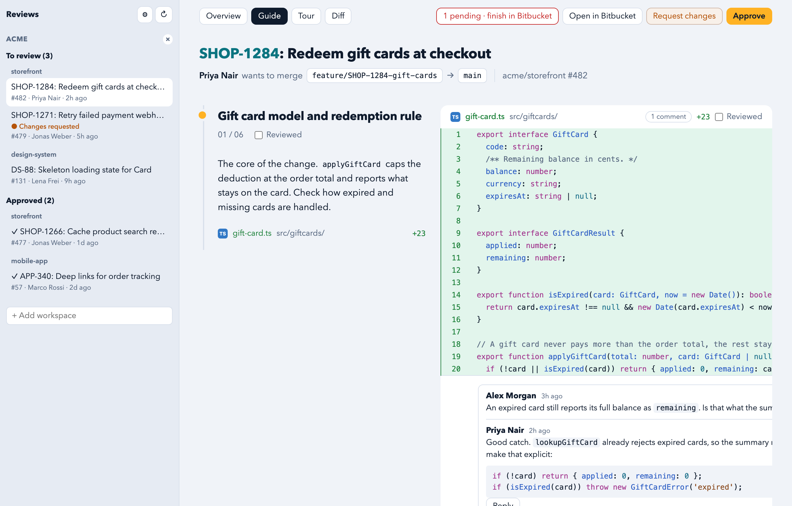

Start with the guide
The guide sorts the changed files into groups by topic, core change first, tests and configuration last. Each group gets a few short sentences: what changes, why, and what to check.
The texts are written in plain language: one idea per sentence, everyday words, and the names from the code.
Lockfiles, snapshots and other generated files are set aside and stay collapsed. So do tests, until you want them.
